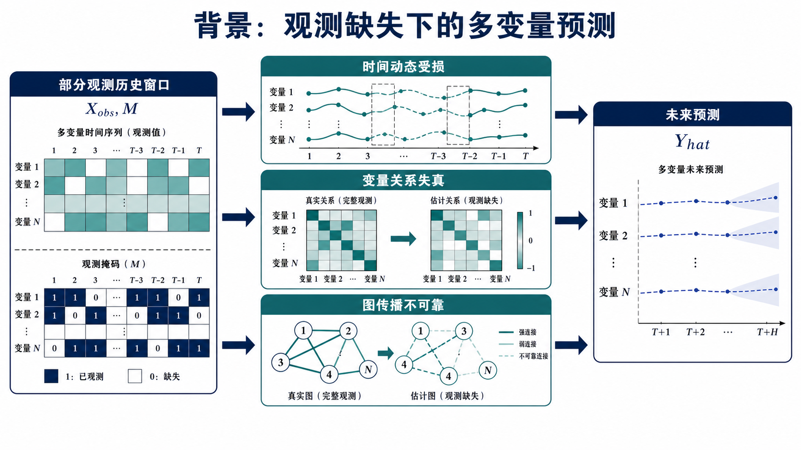
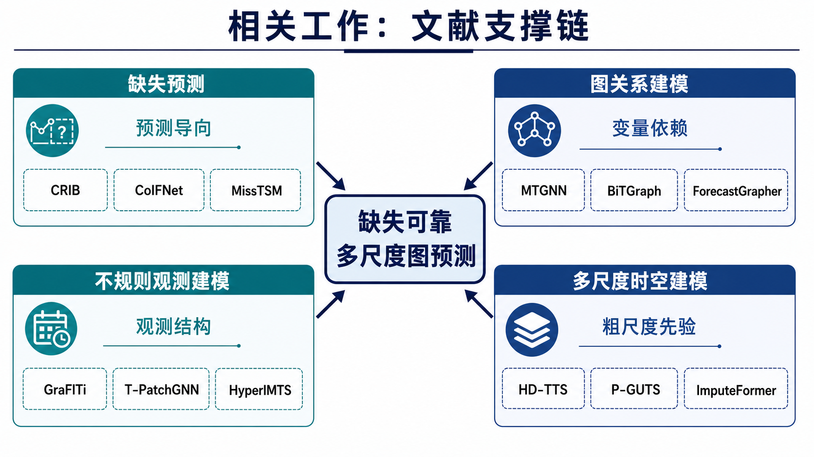
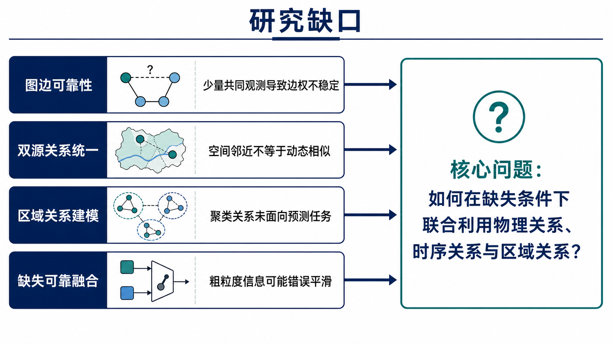
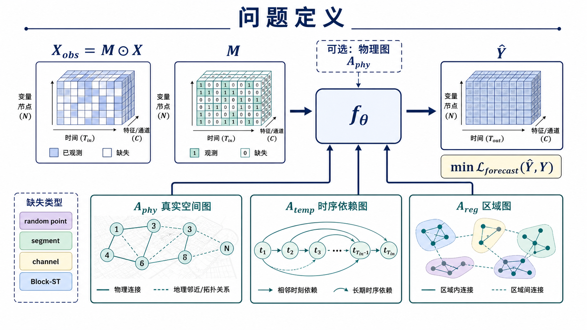
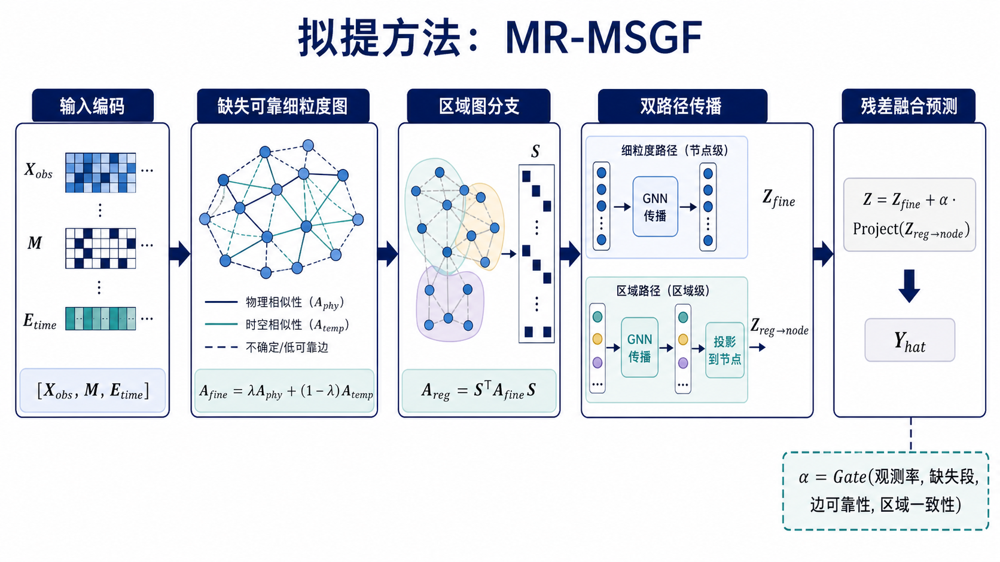

观测缺失条件下多变量时间序列预测的多尺度图关系建模
面向高缺失率、中低变量维度场景，研究真实空间关系、变量时序关系与区域化聚类关系在缺失预测任务中的联合建模。
面向高缺失率、中低变量维度场景，研究真实空间关系、变量时序关系与区域化聚类关系在缺失预测任务中的联合建模。

观测缺失同时影响时间动态、变量关系估计和图传播可靠性。

文献支撑链可归纳为四类：缺失预测、图关系建模、不规则观测建模、多尺度时空建模。

研究缺口集中在缺失条件下的关系可靠性与多尺度关系融合。

输入为部分观测历史窗口和缺失掩码，目标是直接预测未来序列。

该方法以缺失可靠的多尺度图关系作为预测表示的核心。
观测缺失同时破坏时间动态、变量关系估计和图传播可靠性。
已有工作分别支持缺失预测、图关系建模、不规则观测建模和多尺度时空建模。
缺失条件下仍缺少统一建模物理关系、时序关系与区域关系的预测框架。
从部分观测历史、缺失掩码与多类图关系中直接预测未来，不以历史插补作为主目标。
提出缺失可靠的多尺度图关系预测方法，通过可靠时序图、区域图分支和残差融合建模多尺度变量关系。
核心观点：区域关系可作为缺失条件下的低频补充，但其引入强度应受到可靠性约束。